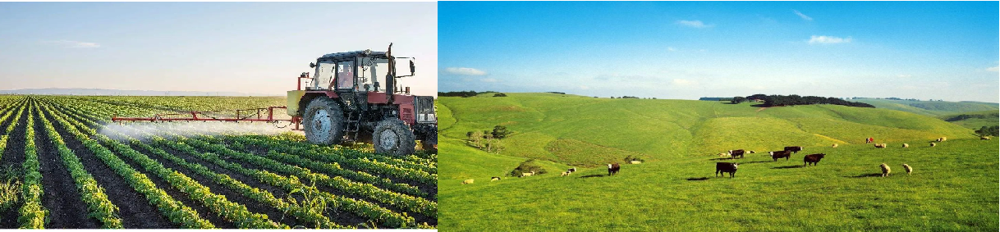

Introduction
Shenyang Wuhang Technology Co., Ltd. was established in 2017. The two founders of the company are teachers at China Jiliang University and Zhejiang University of Finance and Economics. Combining the results of their respective specialties, with an eye on future technologies, the environment, and the needs of society. The company has drawn up a long-term development plan. Starting from the equipment installation and data processing business that the company obtains income from scientific research, we gradually accumulate the company's intellectual property rights and prospect technology. After peer review, the company's business will be divided into 7 stages, the first stage of technology accumulation, the second stage for equipment installation, the third stage for GIS information services, the fourth stage for GIS oil and mining data business, the fifth stage is smart community, the sixth stage is agricultural product traceability system, and the seventh stage is clean energy system. Below is the company's product evolution route.
Founders

Dr Wang Jun: Founder of the company, whose bachelor's degree, master's degree had been granted in Wuhan University, Ph.D. in Huazhong University of Science and Technology, worked in Shenyang Mining Machinery Factory and currently teaches at institute of Mechanical and Electronics.China Jiliang University. His research interests include mechanical dynamics, fluid mechanics, precision instrument design, etc. in which he produced many achivements..
Dr Yan Kang(CEO), co-founder of wuhangtech, who obtained bachelor, master, and doctorate in remote sensing and GIS field in the most prestige institute of her country, also has great talent in programming. She continue practicing in Big data industry, presided several projects supported by local government and enterprises, published about 20 papers, was granted 10 patents as of now.
Our Services
Big data, Clean energy,and Food traceability.


3S big data services and system development
Analyze multi-source remote sensing, surveying and geographic information system data, provide customers with mineral exploration, land, ocean, forestry, fishery and other resources evaluating reports, build intelligent communities, and customize or develop general GIS-related applications.
Clean energy system design, equipment installation services, online trading and virtual reality technology
In response to the fossil fuels that contribute to global warming, the company is poised to roll out its clean energy initiatives. The company has many years of experience in clean energy system design and equipment installation, and holds core patented technologies. In addition, the company intends to develop an online trading and monitoring platform so that ordinary investors and environmental concerned people can put their ideas into practice.
Agri-food traceability system
Australia is a big agricultural country, agriculture is its pillar industry, and its agricultural products enjoy a high reputation in the world. In contrast, the reputation of its products overseas is often damaged, and the lack of supportive product traceability technology leads to a decline in the quality of its products in the sales process. The company combines GIS, VR and BLOCKCHAIN technologies to build a set of fast, reliable, and production monitoring protocols, and is expected to be released and promoted within the next two years.